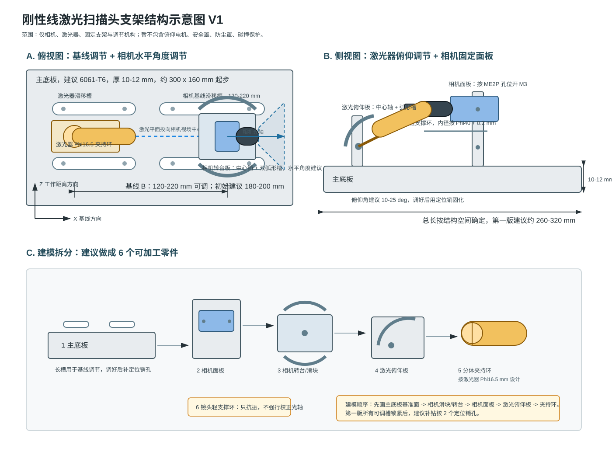

日期：2026-07-06
下面的 SVG 可以直接作为三维建模参考图使用，包含俯视、侧视和拆分建模关系。

主底板
├─ 相机基线滑块
│ ├─ 相机水平角度转台
│ └─ 相机安装面板
│ └─ 镜头轻支撑环
└─ 激光器滑块
└─ 激光器俯仰调节板
└─ Phi16.5 分体夹持环
ME2P-1230-23U3M机械尺寸.png 精确开孔。Phi40 + 0.2 mm 起步，只用于抗振，不用于矫正光轴。Phi16.5 mm 分体夹持环设计，夹持长度建议 25-35 mm。| 项目 | 建议 |
|---|---|
| 主底板 | 6061-T6，厚 10-12 mm，约 260-320 mm x 130-180 mm |
| 相机面板 | 厚 6-8 mm，按相机图纸开孔 |
| 相机水平角度 | ±5°，最多 ±8° |
| 激光俯仰角 | 10-25° |
| 激光滚转角 | ±10° |
| 基线范围 | 120-220 mm，初始建议 180-200 mm |